Odd Jobs
Odd Jobs is a take on a job board that focuses on university students.
- Year
- 2026
- Context
- Course project
- Tool
- Figma

/ Problem
Students need things done and don't have money to spare: cleaning, laundry pickup, watching cats, watering plants, help moving. Students also need money, but often can't commit to a regular job because the hours don't fit around classes. The informal version of this already happens on campus.
/ Information architecture
Home
Browse gigs
- Earn
- Hire
- University-specific
- Search
Post a gig
- Post as hirer
- Post as doer
- Your posts
Job info
From Search and Your posts
- Primary
- Title
- Category
- Pay or budget
- Location
- Date and time
- PosterName, photo, rating, hirer/doer
- Secondary
- Images
- Full description
- Skills and requirements
- Estimated duration
- Accept, offer or chat
- University verified badge
How it works
- For earners
- For hirers
- Verification
- FAQ
My account
- Sign up / in
- Student
- University
- Log out
- Profile
- Notifications
- History
- Active
- Past
- Archive
- Upcoming
- Wallet
- Privacy and security
- Help and FAQ
Profile
From My account
- Name
- Profile picture
- University and year
- Badges
- Average rating
- Hirer, doer or both
- Short bio
- Skills
- Active since
- Activity
- Jobs posted
- Jobs done
- Reviews
- Review summary
- Chat
- Offer a gig
/ Decision 01
Verification.
The first decision was how to make a job board that actually works for university students with difficult schedules. Sign-up is linked to a university email, so everyone on the platform is a verified student. That keeps it trustworthy.
/ Decision 02
Familiarity.
Traditional job boards are formal and high pressure. I took a different approach, drawing on the bulletin boards and chore charts of classrooms, a familiar system where everyone contributes. It signals trust and shared contribution over competition, and reframes the platform as low stakes and community-driven.
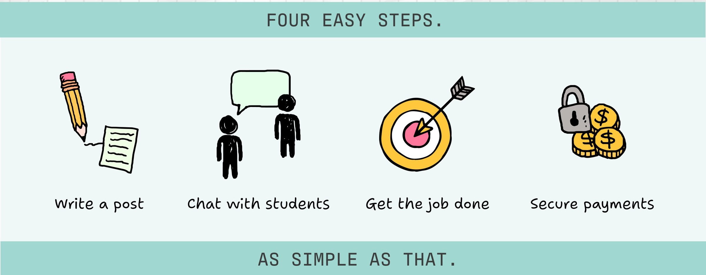
/ Decision 03
Responsive design across three breakpoints.
Each component was adapted into desktop, tablet, and mobile variants to optimize the same content for different forms of interaction. Decisions at each breakpoint covered column structure, navigation, information hierarchy, and type scale. Card grids go from three columns to two to one, filters move from a sidebar into dropdowns, and navigation collapses into a hamburger menu on mobile.
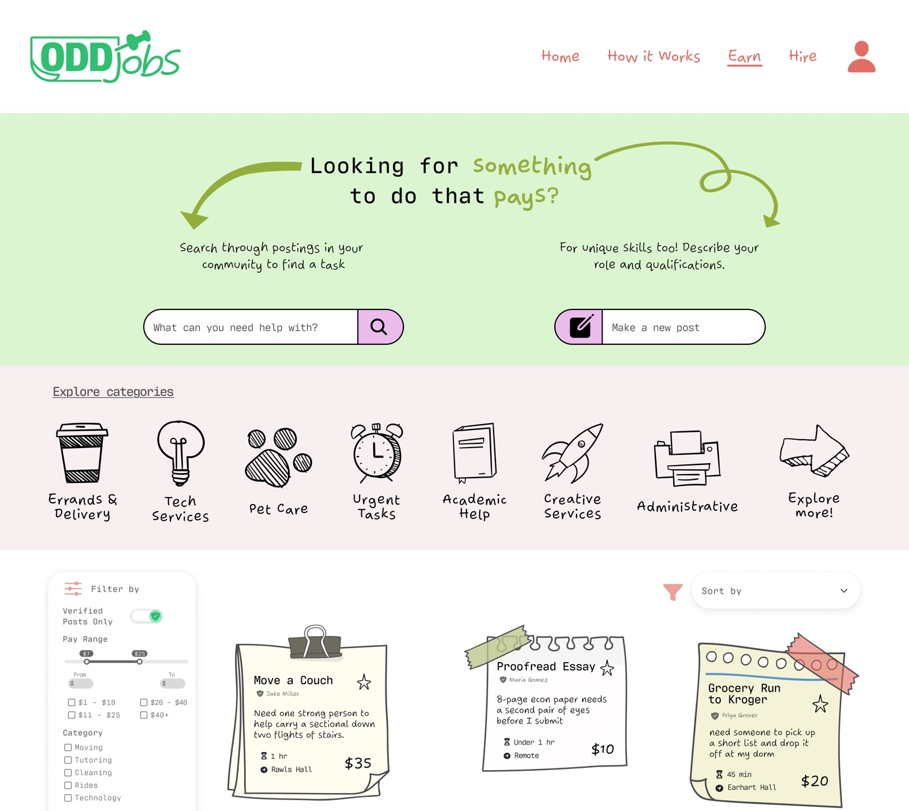
Desktop
- The full navigation runs across the top.
- The filters sit in a sidebar.
- The gig cards sit in a three-column grid.
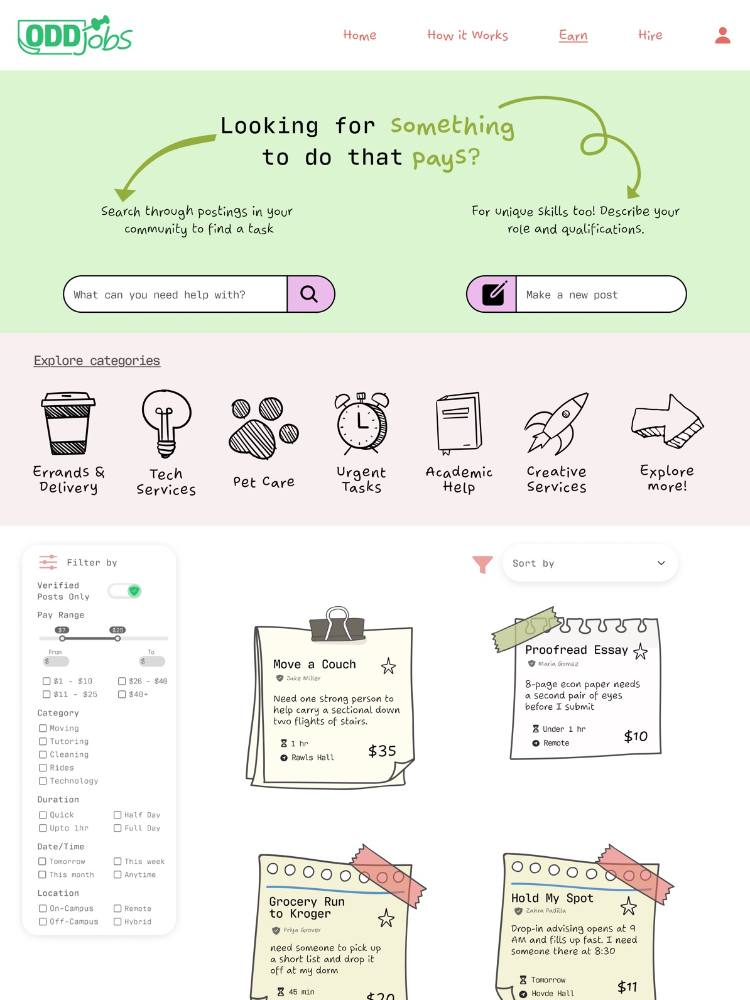
Tablet
- The top and bottom bars keep their layout but get smaller and better spaced.
- The card grid drops to two columns.
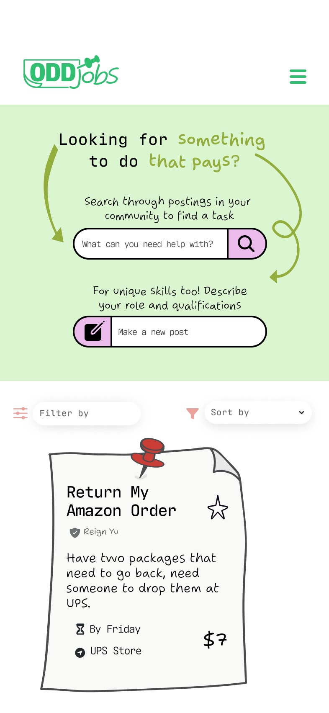
Mobile
- The navigation collapses into a hamburger menu.
- The filters move into dropdowns.
- The cards stack in one column.


/ Wireframes
Low fidelity
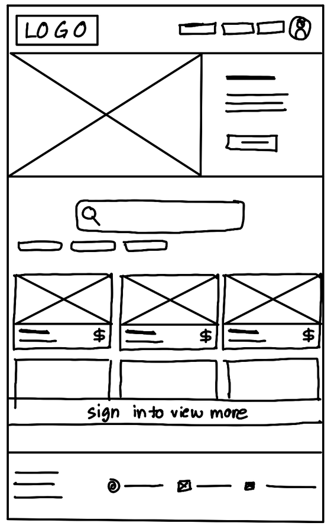
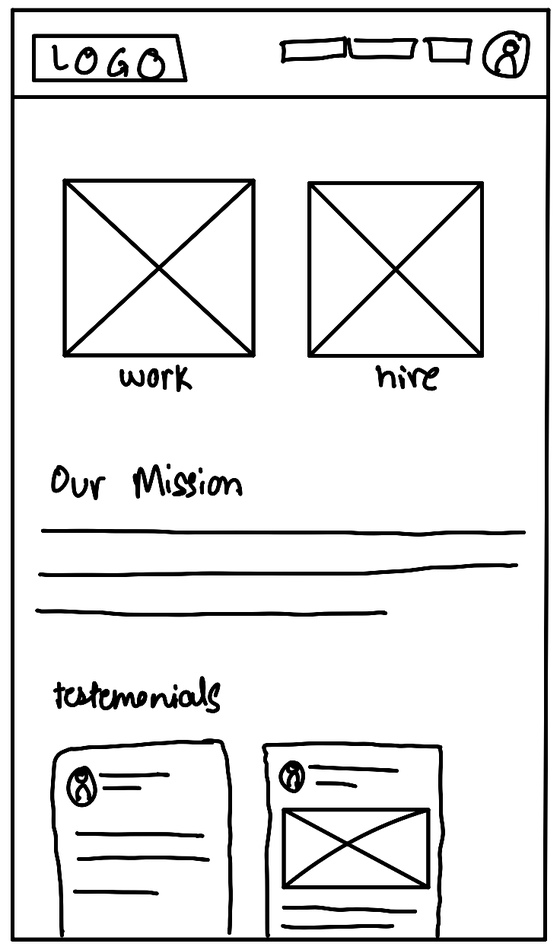
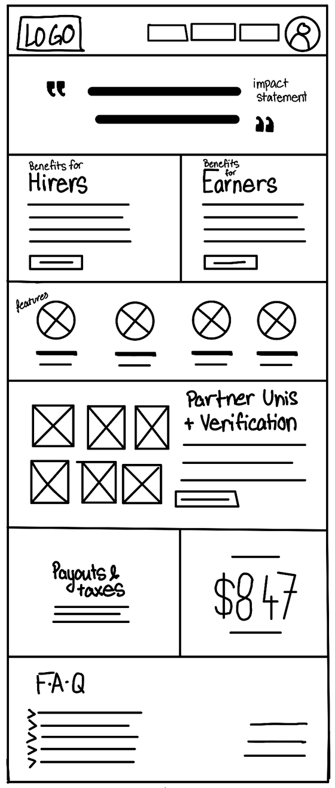
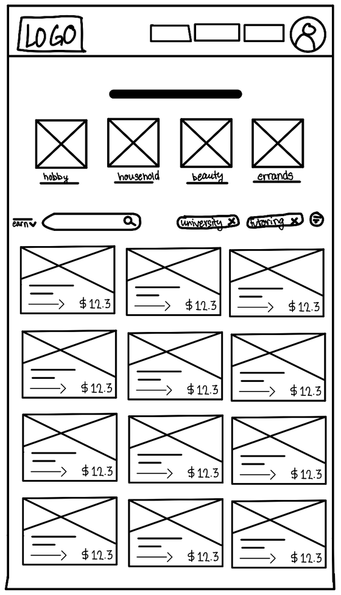
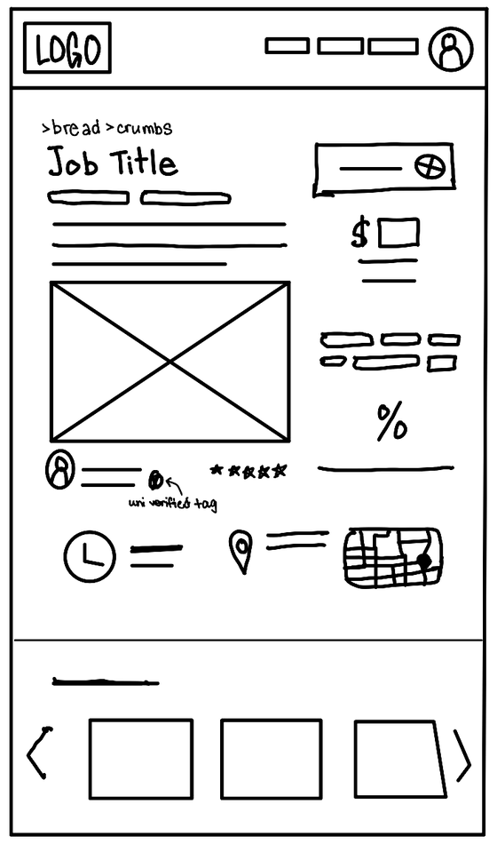
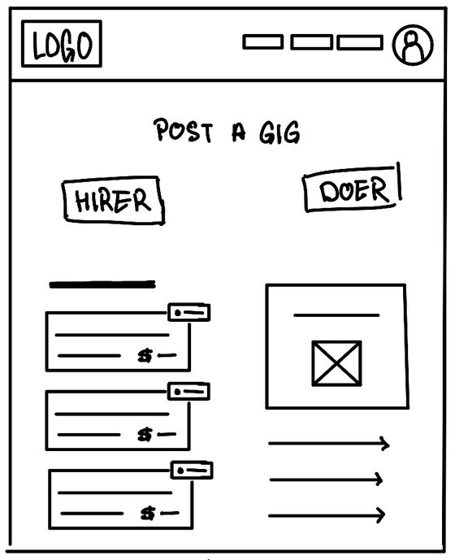
Mid fidelity
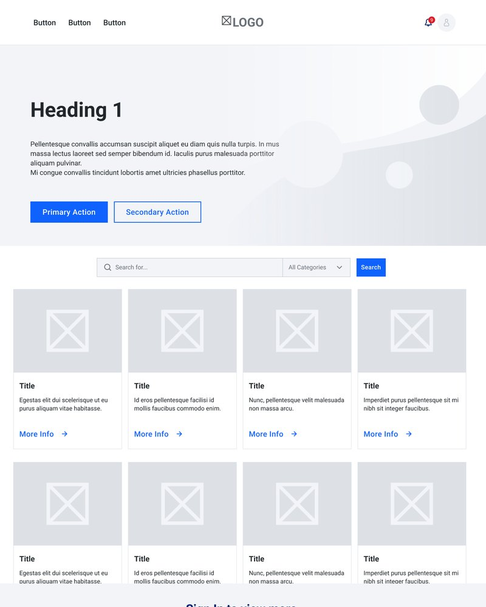
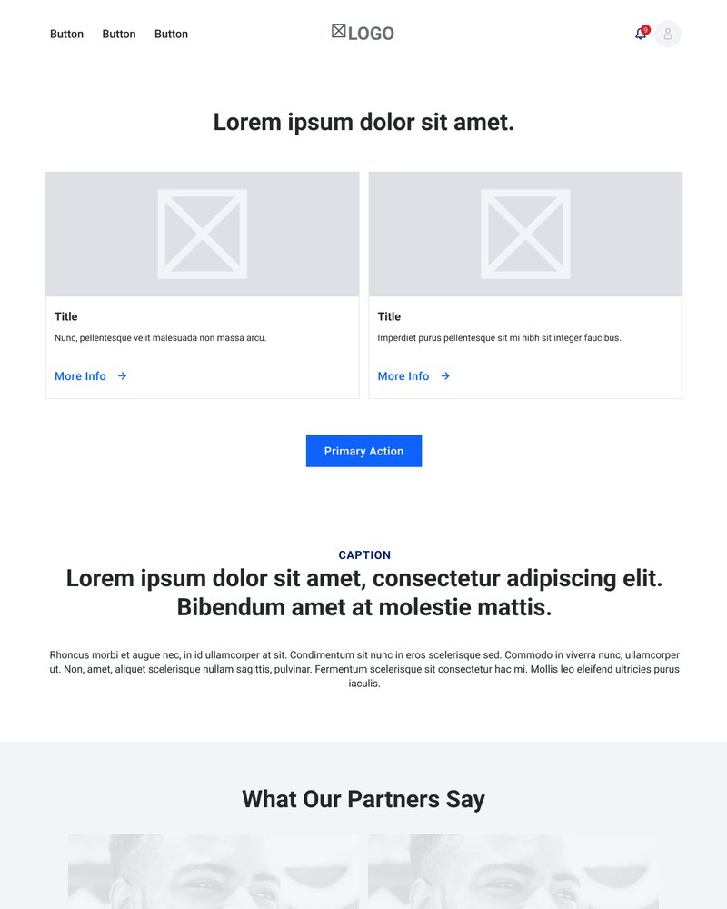
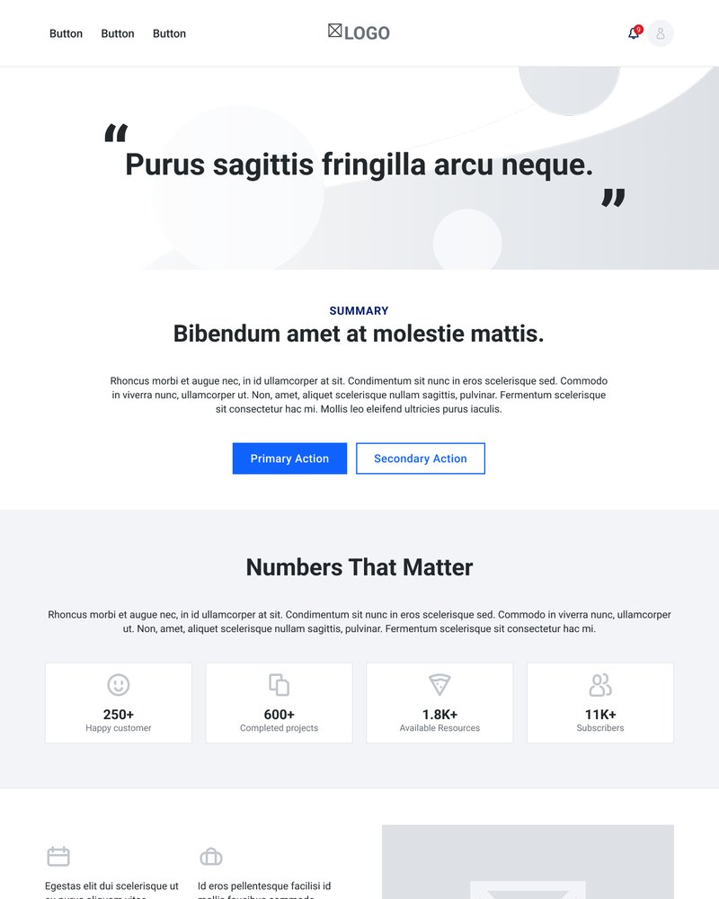
/ User flow
01 Landing
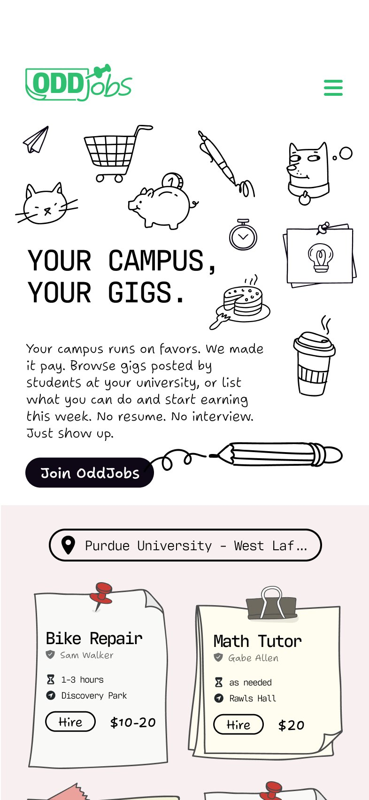
02A Hire
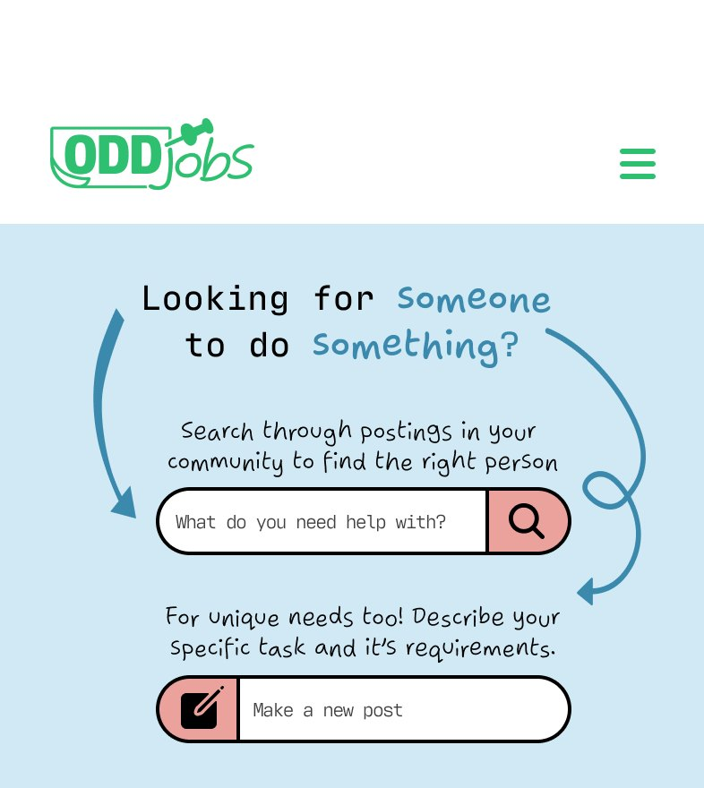
02B Earn
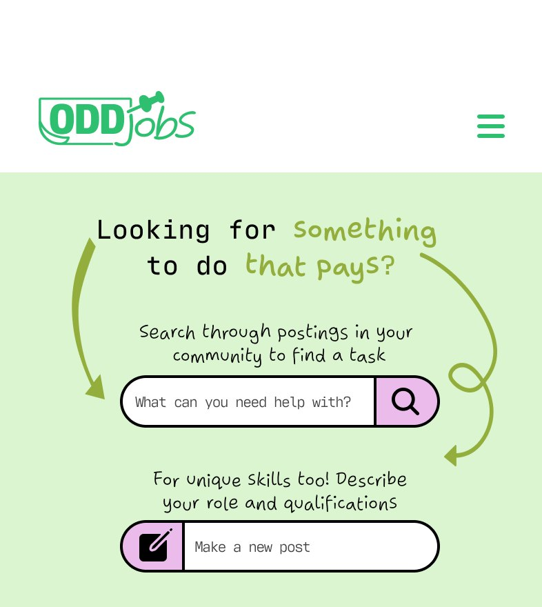
03 Job post
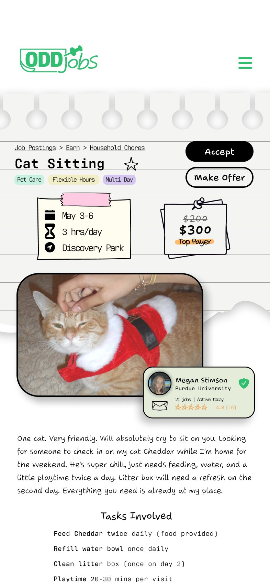
/ Outcomes
The result is a high-fidelity responsive prototype across desktop, tablet, and mobile, with a recorded walkthrough.
- Context
- Course project, AD 319, Purdue, Spring 2026
- Skills
- 0 to 1information architecturepersonasuser flowswireframing